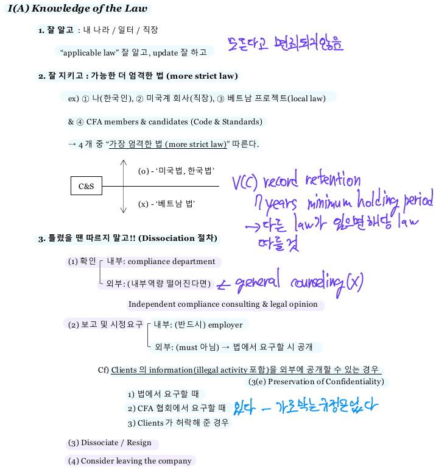

Ethical and Professional Standards
Standards of Professional Conduct
I. PROFESSIONALISM
A. Knowledge of the Law
B. Independence and Objectivity
C. Misrepresentation
D. Misconduct
II. INTEGRITY OF CAPITAL MARKETS
A. Material Nonpublic Information
B. Market Manipulation
III. DUTIES TO CLIENTS
A. Loyalty, Prudence, and Care
B. Fair Dealing
C. Suitability
D. Performance Presentation
E. Preservation of Confidentiality
IV. DUTIES TO EMPLOYERS
A. Loyalty
B. Additional Compensation Arrangements
C. Responsibilities of Supervisors
V. INVESTMENT ANALYSIS, RECOMMENDATIONS, AND ACTIONS
A. Diligence and Reasonable Basis
B. Communication with Clients and Prospective Clients
C. Record Retention
VI. CONFLICTS OF INTEREST
A. Disclosure of Conflicts
B. Priority of Transactions
C. Referral Fees
VII. RESPONSIBILITIES AS CFA INSTITUTE MEMBER OR CFA CANDIDATE
A. Conduct as Participants in CFA Institute Programs
B. Reference to CFA Institute, the CFA Designation, and the CFA Program.
The Standard of Professional Conduct
I. Professionalism
A. Knowledge of the Law

B. Independence and Objectivity


Recommended procedures for compliance
- Create a restricted list and distribute only factual information about companies on the list.
- Restrict special cost arrangements.
- Restrict employee investments in equity IPOs and private placements.
- Firms should appoint a compliance officers and provide clear procedures for employee reporting of unethical behavior and violations of applicable regulations.
C. Misrepresentation

plagiarism
By not providing proper acknowledgement is violation of I(C) Misrepresentation.
D. Misconduct

II. Integrity of Capital Markets
A. Material Nonpublic Information


recommended procedures for compliance
- Substantial control of relevant interdepartmental communications, through a clearance area such as the compliance or legal department.
- Review employee trades-maintain “watch,” “restricted,” and “rumor” lists.
- Monitor and restrict proprietary trading while a firm is in possession of material nonpublic information. → risk arbitrage trading
B. Market Manipulation
price, volume + intent
III. Duties to Clients
A. Loyalty, Prudence, and Care


III(A) requires duties of loyalty, prudence and care for all members and candidates regardless of whether a legal fiduciary duty applies.
Investment statements should be updated at least quarterly, not semi-annually.
- Manage pools of client assets in accordance with the terms of the governing documents, such as trust documents or investment management agreements. → III(C) IPS
- Make investment decisions in the context of the total portfolio.
B. Fair Dealing


Recommended procedures for compliance
- Limit the number of people who are aware that a change in recommendation will be made.
- Shorten the time frame between decision and dissemination.
- Publish personnel guidelines for pre-dissemination-have in place guidelines prohibiting personnel who have prior knowledge of a recommendation from discussing it or taking action on the pending recommendation.
- Simultaneous dissemination of new or changed recommendations to all clients who have expressed an interest or for whom an investment is suitable.
C. Suitability


Recommended procedures for compliance
- Put the needs and circumstances of each client and the client’s investment objectives into a written IPS for each client.
- Review investor’s objectives and constraints periodically to reflect any changes in client circumstances. - annually
D. Performance Presentation
Recommended procedures for compliance
- Presenting performance of weighted composite of similar portfolios rather than a single account.
- Including terminated accounts as part of historical performance and clearly stating when they were terminated.
- Including all appropriate disclosures to fully explain results (e.g., model results included, gross or net of fees, etc.).
E. Preservation of Confidentiality

IV. Duties to Employers
A. Loyalty


business chance 뺏는 행위 → IV(A) Loyalty violation
B. Additional Compensation Arrangements

C. Responsibilities of Supervisors

Supervisory responsibility should enforce investment and non-investment related activities.
Designate a compliance officer with authority clearly defined.
V. Investment Analysis, Recommendations, and Actions
A. Diligence and Reasonable Basis

external expertise - due diligence
consider
- Global and national economic conditions
- A firm’s financial results, operating history, and business cycle stage
- Fees and historical results for a mutual fund
- Limitations of any quantitative models used.
- A determination of whether peer group comparisons for valuation are appropriate.
B. Communication with Clients and Prospective Clients
- Disclose to clients and prospective clients the basic format and general principles of the investment processes used to analyze investments, select securities, and construct portfolios and must promptly disclose any changes that might materially affect those processes.
- Disclose to clients and prospective clients significant limitations and risks associated with the investment process.
- Use reasonable judgement in identifying which factors are important to their investment analysis, recommendations, or actions and include those factors in communications with clients and prospective clients.
- Distinguish between fact and opinion in the presentation of investment analysis and recommendations.
Members and candidates must inform clients about limitations inherent to an investment - liquidity, capacity
C. Record Retention
다른 규정이 없으면 7 years
former, existing, prospective clients
Quarterly
- portfolio components III(A)
- referral fees VI(C)
- Trade confirmation VI(B)
Annually
- IPS update III(C)
- Statement of personal holdings VI(B)
7 years
- record retention V(C)
VI. Conflicts of Interests
A. Disclosure of Conflicts
Compensation package must be disclosed.
B. Priority of Transactions
Putting client’s interests above the firm’s interest all time.
market > client > employer > manager
Information about pending trades should not be acted on for personal gain.
- Limited participation in equity IPOs. Members can avoid these conflicts by not participating in IPOs.
- Establish blackout/restricted periods.
- Reporting requirements. Supervisors should establish reporting procedures, including duplicate trade confirmations, disclosure of personal holdings/beneficial ownership positions, and preclearance procedures.
Trade confirmation from broker - quarterly
statement of personal holdings - annually
C. Referral Fees
Disclose
- full costs of the services
- any partiality
- nature
- value
- writing
VII. Responsibilities as a CFA Institute Member or CFA Candidate
A. Conduct as Participants in CFA Institute Programs
B. Reference to CFA Institute, the CFA Designation, and the CFA Program

Do not:
- Over-promise individual competence
- Over-promise investment results in the future (i.e., higher performances, less risk, etc.)
Members must satisfy these requirements to maintain membership:
- Sign PCS annually
- Pay CFA Institute membership dues annually
Asset Manager Code
Managers must uphold the applicable rules governing capital markets, not just stay informed about them.
Code & Standard → individual, corporate
GIPS → corporate (optional)
Asset Manager Code → corporate (optional)
CFA Logo → individual
A) Loyalty to Clients
B) Investment Process and Actions
C) Trading
D) Risk Management, Compliance, and Support
Portfolio information needs a review by an independent third-party business continuity plan should include monitoring, analyzing, and trading investment if primary systems are unavailable.
- Establish a business continuity plan to deal with disasters or market disruptions. At minimum this should include:
- Backup (preferably offsite) of account information
- plans to monitor, analyze, and trade investments
- communication plans with key vendors and suppliers
- employee communication and coverage of key business functions when normal communications are out
- client communication plans
- contacting and communicating with clients during a period of extended disruption
- past record - offsite back-up (recommended)
- alternative trading plan
- supplier, vendor, employee, clients
E) Performance and Valuation
F) Disclosures
Global Investment Performance Standards


I.0. Fundamentals of Compliance
Distinct business entity → not legal entity, individual
- functionally/organizational separated
- discretion over assets
- autonomy of decision-making process
There is no partial compliance with GIPS.
The firm should maintain records to support the firm’s eventual 10-year performance history.
I.1. Input Data
Standard 1.A.3. Portfolio valuation.
- Prior to January 1, 2001, portfolios must be value at least quarterly.
- Beginning on or after January 1, 2001, at least monthly.
- beginning on or after January 1, 2010, at least monthly and on the date of all large external cash flows.
- 2.A.2. FIRMS MUST calculate TIME-WEIGHTED RATES OF RETURN that adjust for EXTERNAL CASH FLOWS. Both periodic and sub-period returns MUST be geometrically LINKED. EXTERNAL CASH FLOWS MUST be treated according the to FIRM’S COMPOSITE-specific policy. At a minimum:
- For periods beginning on or after 1 January 2001, FIRMS MUST calculate PORTFOLIO returns at least monthly.
- For periods beginning on or after 1 January 2005, FIRMS MUST calculate PORTOFLIO returns that adjust for daily-weighted EXTERNAL CASH FLOW.
1.1.A.2. Portfolio must be valued in accordance with the definition of fair value.
1.1.A.3. Firms must value portfolio in accordance with the composite-specific valuation policy.
1.1.A.3.c. Portfolio must be valued no more frequently than required by the valuation policy.
- fiscal-year-based calendar-year-end base unless other fiscal year is used.
I.2. Calculation Methodology
Time-weighted rate of return
\[ R_{t} = \frac{\text{Ending value} - \text{Beginning value}}{\text{Beginning value}} \]
Modified Dietz
\[ R_{MD} = \frac{\text{Ending value} - \text{Beginning value} - \text{External cashflow}}{\text{beginning value} + \text{adjusted external cashflow}} \]
I.3. Composite Construction
Standard 3.A.1. All actual, fee-paying, discretionary portfolios must be included in at least one composite. Although non-fee-paying discretionary portfolios may be included in a composite (with appropriate disclosures) nondiscretionary portfolios must not be included in a firm’s composites.
- 5.A.6. If a COMPOSITE includes non-fee-paying PORTFOLIOS, the FIRM MUST present the percentage of COMPOSITE assets represented by non-fee-paying PORTFOLIOS as of each annual period end.
Composite returns calculation
- asset-weighting portfolio returns by beginning-of-period values
- asset-weighting portfolio returns by both beginning-of-period values and ECFs - 각각 modified Dietz 방식으로 beginning-of-period values + adjusted cashflow를 기준으로 weights 계산
- The aggregate method - composite을 하나의 portfolio로 간주하고 modified Dietz
Portfolio inclusion and exclusion
- New portfolios should be included in a composite at the beginning of the next full measurement period.
- Terminated portfolios should be included in a composite through the last full measurement period in which the firm had discretion.
switching portfolios
- A portfolio may be switched to a new composite if the client changes the portfolio’s mandate, objective, or strategy or if the firm redefines the composite.
- With a switch to a new composite, the portfolio’s performance must remain in the old composite’s historical performance.
significant cashflows
- Significant cashflows may temporarily exclude the portfolio from the composite or create and report on a temporary new account (outside of the composite)
Minimum asset levels
- Minimum asset levels must be specified in advance and a portfolio may be excluded from a portfolio if its size is so small that it cannot be invested appropriately
- Portfolios that are removed cannot have their prior performance removed from the composite’s historical record.
All portfolios are included in a single composite.
If the portfolio meets the criteria for inclusion, it can be included in more than one of the firm’s composites.
All actual, fee-paying, non-fee-paying, discretionary portfolio must be included in one composite at least.
All actual, fee-paying, non-fee-paying, discretionary, non-discretionary portfolio could be included in the total assets of the firm.
Simulated, modeled, or back-tested performance cannot be presented as an actual live portfolio.
I.3.A.5. Composites must include new portfolios on a timely and consistent basis after each portfolio comes under management.
I.3.A.9. If the firm sets a minimum asset level for portfolios to be included in a composite, the firm must not include portfolios below the minimum asset level in that composite.
Strict requirements on portfolio management cannot allow manager to make discretionary decisions over the investment.
Under GIPS, there is no minimum number of the portfolios included in a composite.
I.4. Disclosure
[Insert name of firm] claims compliance with the Global Investment Performance Standards (GIPS) and has prepared and presented this report in compliance with the GIPS standards. [Insert name of firm] has been independently verified for the periods [insert dates].
[Insert name of firm] claims compliance with the Global Investment Performance Standards (GIPS) and has prepared and presented this report in compliance with the GIPS standards. [Insert name of firm] has not been independently verified.
Firm must disclose the number of the portfolios in a composite if the number is five or fewer.
I.4.A.13. Firms must disclose the presence, use, and extent of leverage, derivatives, and short positions, if material, including a description of the frequency of the use and characteristics of the instruments sufficient to identify risks.
I.4.A.25. For periods beginning on or after 1 January 2006, firms must disclose the use of a sub-advisor and the periods a sub-advisor was used.
I.5. Presentation & Reporting
GIPS reporting is by annual return periods and composite. Time-weighted returns of a relevant benchmark for the same periods must be included.
At lest five years, up to ten years.
For each year, disclose
- the number of accounts in the composite (if there are six or more)
- the amount of assets in the composites and in the firm (or percentage of firm assets made up by this composite).
The report must include annual measures of internal composite dispersion, benchmark dispersion, and composite dispersion. Internal dispersion measures the variability of portfolio returns within the composite, whereas the latter two measures allow the client to compare the composite’s historical risk against a benchmark.
Acceptable measures
- high and low returns
- range
- equal-weighted standard deviation
- asset-weighted standard deviation
- or another measure chosen by the firm that fairly represents the composite’s internal dispersion.
If firm continues the original strategy of the composite with all of its continuing factors, appropriate disclosures are made and documentation is in place, the performance must be linked.
- substantially all the decision makers continue to be employed
- the decision process remains independent and comparable
- the past record can be documented
- there is no break in the performance record between the new and previous firm.
Do not annualize.
I.5.A.6. If a composite includes non-fee-paying portfolios, the firm must present the percentage of composite assets represented by non-fee-paying portfolios as of each annual period end.
I.5.A.7. If a composite includes portfolios with bundled fees, the firms must present the percentage of composite assets represented by portfolios with bundled fees as of each annual period end.
I.6. Real Estate
I.7. Private Equity
I.8. Wrap Fee/SMA
II. Valuation Principles
- Active market, identical, quoted price
- Active market, similar, quoted price
- Inactive market, identical or similar, quoted price
- market-based input valuation
- subjective input valuation
III. Advertising
present five years of annual composite returns on advertising
The advertisement must state how prospective client can obtain a compliant presentation and/or the firm’s list of composite descriptions, but that disclosure is not a part of the GIPS compliance statement for advertisement. There is no need of verification.
III.B.6. All advertisement that include a claim of compliance with the GIPS standards by following the GIPS advertising guidelines must disclose the following whether returns are presented gross-of-fees and/or net-of fees.
[COMPANY NAME] claims compliance with the GIPS. - This statement is not complied with GIPS advertisement guidelines.
Only for advertisement, number of accounts in the composite must be presented.
IV. Compliance Statement & Notes
For period after January 1, 2010, carve-out must include their own cash balance in order to be included in a composite, so a cash allocation policy for periods after 1 January, 2010 would not be GIPS compliant.

GIPS verification
The verifier will issue an opinion regarding whether the firm complies on a firm-wide basis and has proper policies and procedures in place.
Verification may also include a more detailed review of specified composites, which is known as a performance examination.
Verification covers a minimum of one year but covering the period of the full GIPS report is recommended.
Verification brings additional credibility to the claim of compliance.
IV.S.3. Firm must not state that a particular composite has been verified or make any claim to that effect.
GIPS benefits
The ability to compare the performance of firms operating in different countries with different sets of established practices.
In addition to a more reliable measure of past investment performance results, the GIPS provide managers with the ability to compete fairly in foreign markets.